The Blyde River Canyon is a 26km long Canyon located in Mpumalanga, South Africa. It is the third-largest canyon on Earth, behind the Grand Canyon and the Fish River Canyon. Unlike the Grand and Fish River Canyon, the Blyde River Canyon is a "green canyon" which is dominated by subtropical vegetation. The Blyde River Canyon passes a rock formation known as the "Three Rondavels". So named as the formation resembles three African-style houses or rondavels. This canyon is part of the Panorama Route. This route starts at the town Graskop and includes God's Window, the Pinnacle and Bourke's Luck Potholes.

The Blyde River Canyon supports large diversity of life, including numerous fish and antelope species as well as hippos and crocodiles, and every primate species that may be seen in South Africa (including both greater and lesser bushbabies, vervet monkeys and Samango monkeys). The diversity of birdlife is similarly high, including the beautiful and much sought Narina trogon as well as species such as the Cape vulture, black eagle, crowned eagle, African fish eagle, gymnogene, jackal buzzard, white-rumped vulture, bald ibis, African finfoot, Knysna lourie, purple-crested lourie, Gurney's sugarbird, malachite sunbird, cinnamon dove, African emerald cuckoo, red-backed mannikin, golden-tailed woodpecker, olive bush shrike, green twinspot, Taita falcons (very rarely sighted, a breeding pair lives in the nearby Abel Erasmus Pass), Cape eagle owl, white-faced owl, wood owl, peregrine falcon, black-breasted snake eagle, Wahlberg's eagle, long-crested eagle, lanner falcon, red-breasted sparrowhawk, rock kestrel and others.
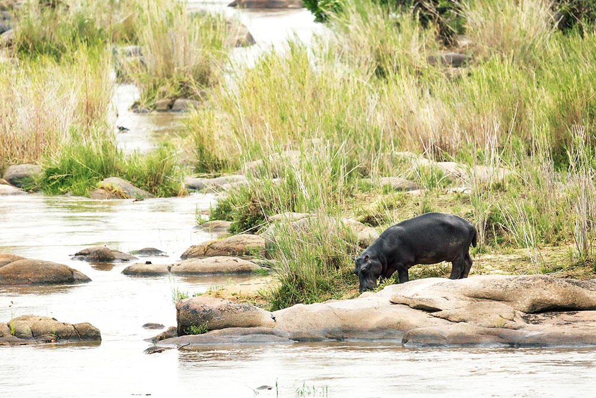The canyon and the surrounding Drakensberg escarpment is a very popular tourist region with a well-developed tourism industry supported by good public infrastructure.
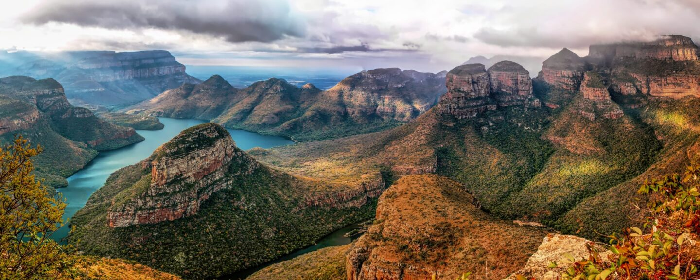Wine tasting is one of the best ways to spend a day in Cape Town. Combine the delicious wines with some of the most beautiful landscapes on earth, century old architecture, and awe-inspiring food, and it's no surprise that it's one of Cape Town's most beloved activities for visitors and locals alike.

Addo Elephant National Park is a diverse wildlife conservation park situated close to Port Elizabeth in South Africa and is one of the country's 20 national parks. It currently ranks third in size after Kruger National Park and the Kgalagadi Transfrontier Park.
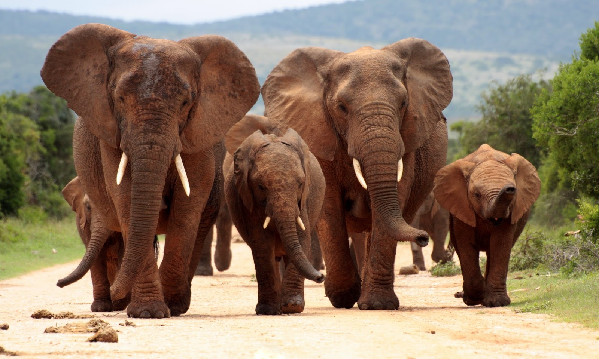The flora within the AENP is quite varied, and like all plant life, is a central factor to the ecological system in place. Several species of rare and endemic plants, particularly succulent shrubs and geophytes are native to the South African region within the AENP. Many species are under environmental pressure, however, and are facing possible extinction. More than 600 elephants, 400 Cape buffaloes, over 48 endangered black rhinos (Diceros bicornis michaeli) as well as a variety of antelope species. Lion and spotted hyena have also recently been re-introduced to the area. The largest remaining population of the flightless dung beetle (Circellium bacchus) is located within the park.
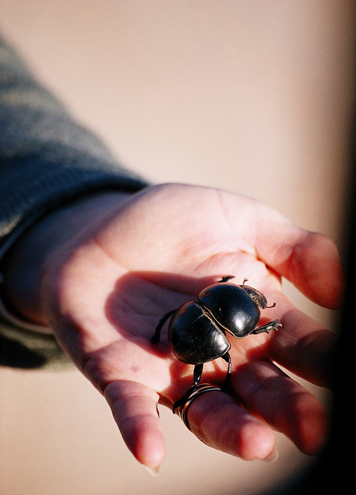In 2018 the highest visitor count in the park's 87-year history was recorded. The park received 305,510 visitors between 1 April 2017 and 31 March 2018 (up from 265,585 in the previous year). International visitors make up 55% of this number, with German, Dutch and British nationals in the majority. There is a main camp, featuring a swimming pool, restaurant, flood lit water hole and various accommodation, four other rest camps and four camps run by concessionaires. The main entrance as well as two looped tourist roads in the park are tarred while the others are graveled. There is also an additional access road through the southern block of the park feeding off the N2 highway near Colchester; it joins up with the existing tourist roads in the park.
Hermanus (originally called Hermanuspietersfontein, but shortened in 1902 as the name was too long for the postal service), is a town on the southern coast of the Western Cape province of South Africa. It is famous for Southern Right whale watching during the southern winter to spring seasons, and is a popular retirement location. Although the Southern Right whale is the most prolific species in the bay, it is not the only one that visits these shores. The whales can be seen from the cliffs all along the coast from as early as June and usually depart in early-December. They were once hunted in the nearby town of Betty's Bay, but are now protected to ensure the survival of the species. The Old Harbour Museum contains several exhibitions that explain the whaling industry, and the De Wetshuis Photo Museum houses an exhibition of photos by T. D. Ravenscroft that depicts the history of Hermanus. The Whale Museum houses a skeleton of a whale and shows an audio-visual presentation of whales and dolphins twice daily.
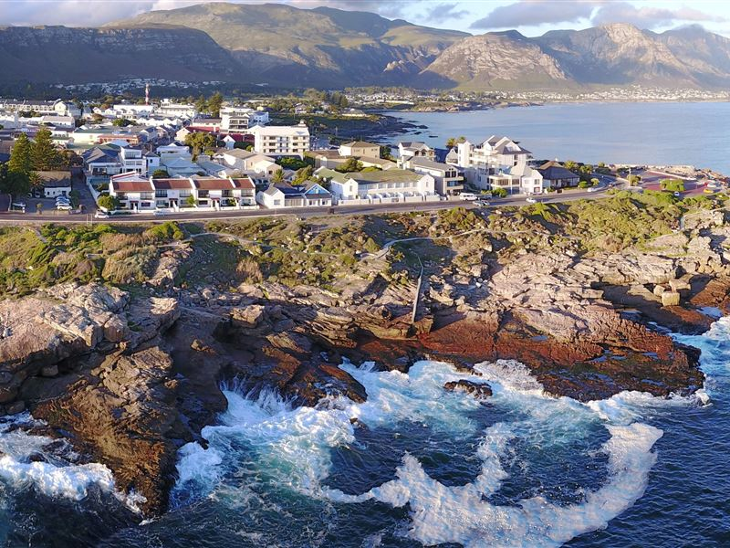Hermanus is classified as having a warm-summer Mediterranean climate (Köppen).[4] It receives roughly 520 mm of rain per annum, the majority of which falls during the winter months of June to August in the form of frontal precipitation. Average midday temperatures range from 25 °C in February to 16 °C in July.[4] Extremes above 30 °C and under 10 °C are not uncommon. Summer and Winter months are characterised by strong south-easterly and north-westerly winds respectively.
Over 100 varieties of bird species reside in the Greater Hermanus area. Species such as the Orange-breasted Sunbird, the Cape Sugarbird, Victorin's Warbler and many more rare, beautiful and fascinating animals, make Hermanus a popular destination for bird enthusiasts.
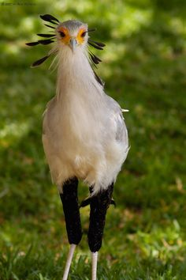The Space Science Directorate of the South African National Space Agency, previously the Hermanus Magnetic Observatory (HMO), is a research facility of the National Research Foundation, and forms part of the worldwide network which monitors variations of the earth's magnetic field.
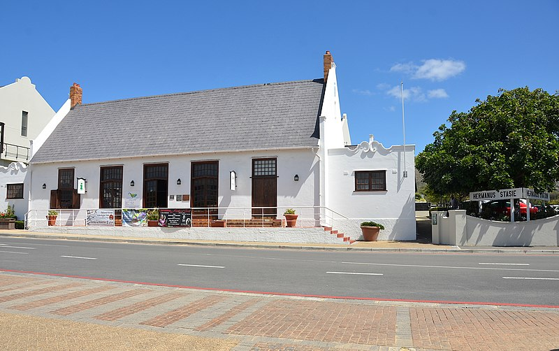It is the third most populous city in South Africa after Johannesburg and Cape Town and the largest city in the South African province of KwaZulu-Natal. Durban forms part of the eThekwini Metropolitan Municipality, which includes neighboring towns and has a population of about 3.44 million, making the combined municipality one of the largest cities on the Indian Ocean coast of the African continent. Durban was one of the host cities of the 2010 FIFA World Cup.
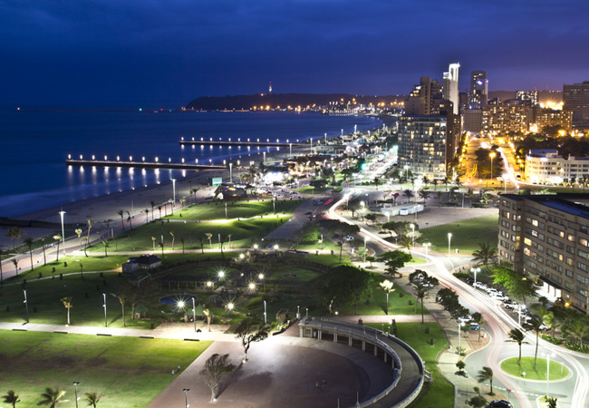Durban has a humid subtropical climate with hot and humid summers and pleasantly warm and dry winters, which are snow and frost-free. Durban has an annual rainfall of 1,009 millimetres (39.7 in). The average temperature in summer ranges around 24 °C (75 °F), while in winter the average temperature is 17 °C (63 °F).
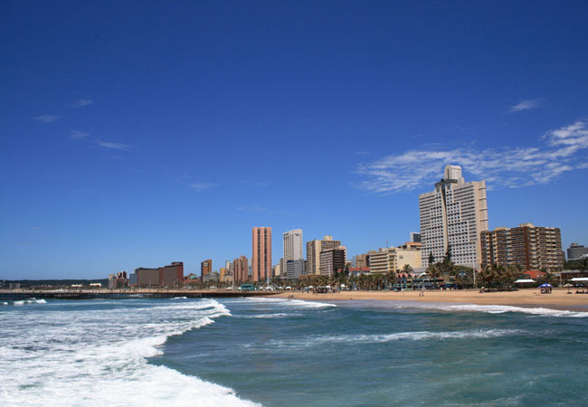Durban is ethnically diverse, with a cultural richness of mixed beliefs and traditions. Zulus form the largest single ethnic group. It has a large number of people of British and Indian descent. The influence of Indians in Durban has been significant, bringing with them a variety of cuisine, culture and religion. In the years following the end of Apartheid there was a population boom as Africans were allowed to move into the city. The population grew by 2.34% between 1996 and 2001. This led to shanty towns forming around the city which were often demolished. Between 2001 and 2011 the population growth slowed down to 1.08% per year and shanty towns have become less common as the government builds low-income housing. The population of the city of Durban and central suburbs such as Durban North, Durban South and the Berea increased 10.9% between 2001 and 2011 from 536,644 to 595,061. The proportion of Black Africans increased while the proportion of people in all the other racial groups decreased. Black Africans increased from 34.9% to 51.1%. Indian or Asians decreased from 27.3% to 24.0%. Whites decreased from 25.5% to 15.3%. Coloureds decreased from 10.26% to 8.59%. A new racial group, Other, was included in the 2011 census at 0.93%. The city's demographics indicate that 68% of the population are of working age, and 38% of the people in Durban are under the age of 19 years. It has the highest number of dollar millionaires added per year of any South African city with the number having increased 200 percent between 2000 and 2014.
Sugar refining is one of Durban's main industries. South Africa produces 19.9 million tons of sugar cane a year, and most of it comes from the rolling green valleys of KwaZulu-Natal.
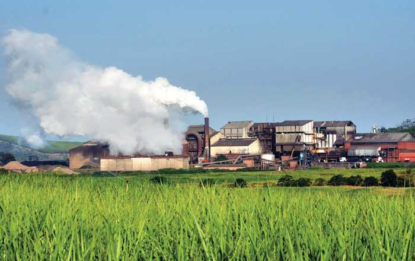Kgalagadi Transfrontier Park is a large wildlife preserve and conservation area in southern Africa. The park straddles the border between South Africa and Botswana and comprises two adjoining national parks:
The park has abundant, varied wildlife. It is home to large mammalian predators such as lions, cheetahs, African leopards, and hyenas. Migratory herds of large herbivores such as blue wildebeest, springbok, eland, and red hartebeest also live and move seasonally within the park, providing sustenance for the predators. More than 200 species of bird can be found in the park, including vultures and raptors such as eagles, buzzards, and secretary birds. Since 2005, the protected area is considered a Lion Conservation Unit and a lion stronghold in Southern Africa.
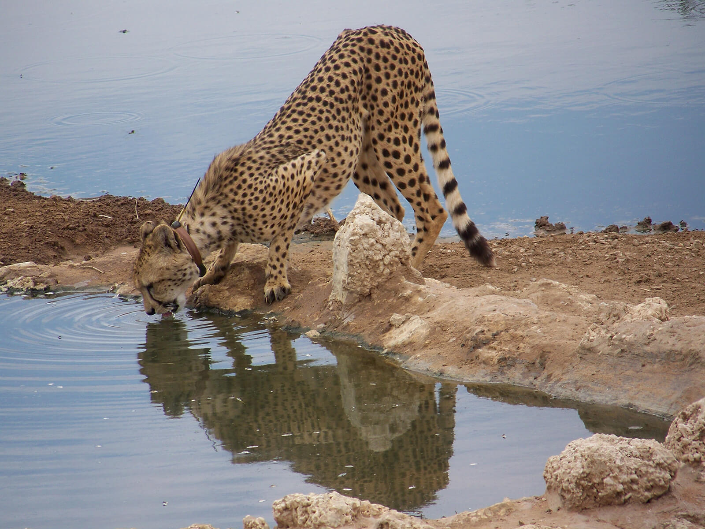 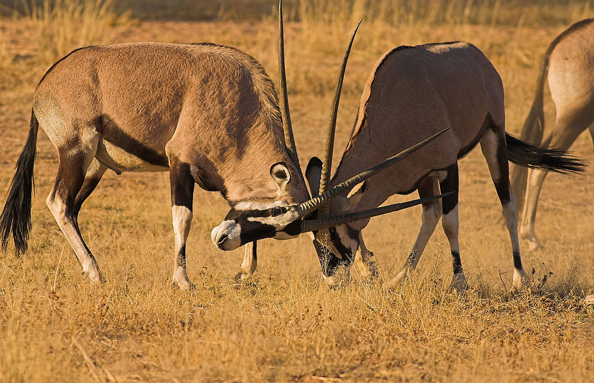 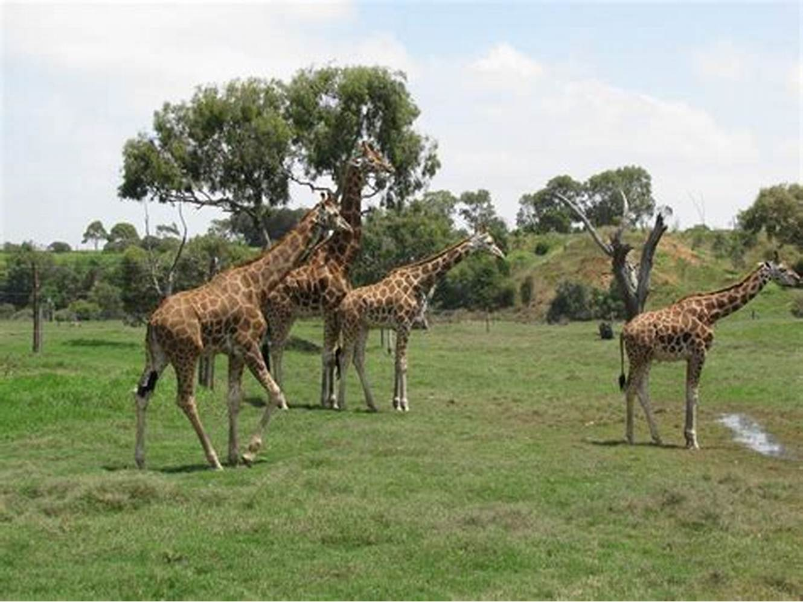The weather in the Kalahari can reach extremes. January is midsummer in southern Africa and the daytime temperatures are often in excess of 40 °C (104 °F). Winter nights can be quite cold with temperatures below freezing. Extreme temperatures of −11 °C (12 °F) and up to 45 °C (113 °F) have been recorded. Precipitation is sparse in this desert area.
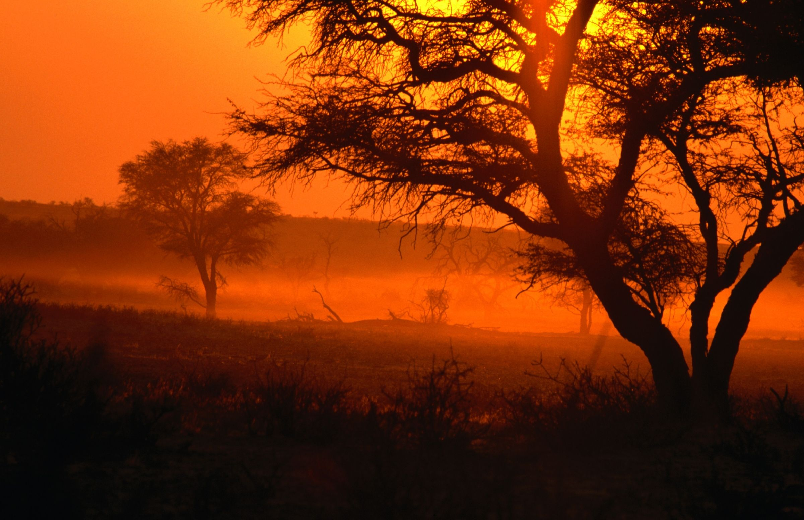Within the park there are three traditional tourist lodges, called "rest camps". These are fully serviced lodges and include amenities such as air conditioning, shops and swimming pools. There are also six wilderness camps in the park. The wilderness camps provide little more than shelter and wash water; visitors must supply their own food, drinking water and firewood
The Garden Route (Afrikaans: Tuinroete) is a 300-kilometre (190 mi) stretch of the south-eastern coast of South Africa which extends from Witsand in the Western Cape to the border of Tsitsikamma Storms River in the Eastern Cape. The name comes from the verdant and ecologically diverse vegetation encountered here and the numerous estuaries and lakes dotted along the coast. It includes towns such as Knysna, Plettenberg Bay, Mossel Bay, Great Brak River, Little Brak River, Wilderness, Sedgefield and Nature's Valley; with George, the Garden Route's largest city and main administrative centre. It has an oceanic climate, with mild to warm summers, and mild to cool winters. It has the mildest climate in South Africa and the second mildest climate in the world, after Hawaii, according to the Guinness Book of Records. Temperatures rarely fall below 10 °C in winter and rarely climb beyond 28 °C in summer. Rain occurs year-round, with a slight peak in the spring months, brought by the humid sea-winds from the Indian Ocean rising and releasing their precipitation along the Outeniqua and Tsitsikamma Mountains just inland of the coast. The Route is sandwiched between the aforementioned mountains and the Indian Ocean, with mountain passes, including the Outeniqua Pass, linking the area with the arid Little Karoo. The Outeniqua and Tsitsikamma indigenous forests are a unique mixture of Cape Fynbos and Temperate Forest and offer hiking trails and eco-tourism activities. Nearly 300 species of birdlife are to be found in a variety of habitats ranging from fynbos to forest to wetlands. In 2017 the Garden Route was added to UNESCO's World Network of Biosphere Reserves
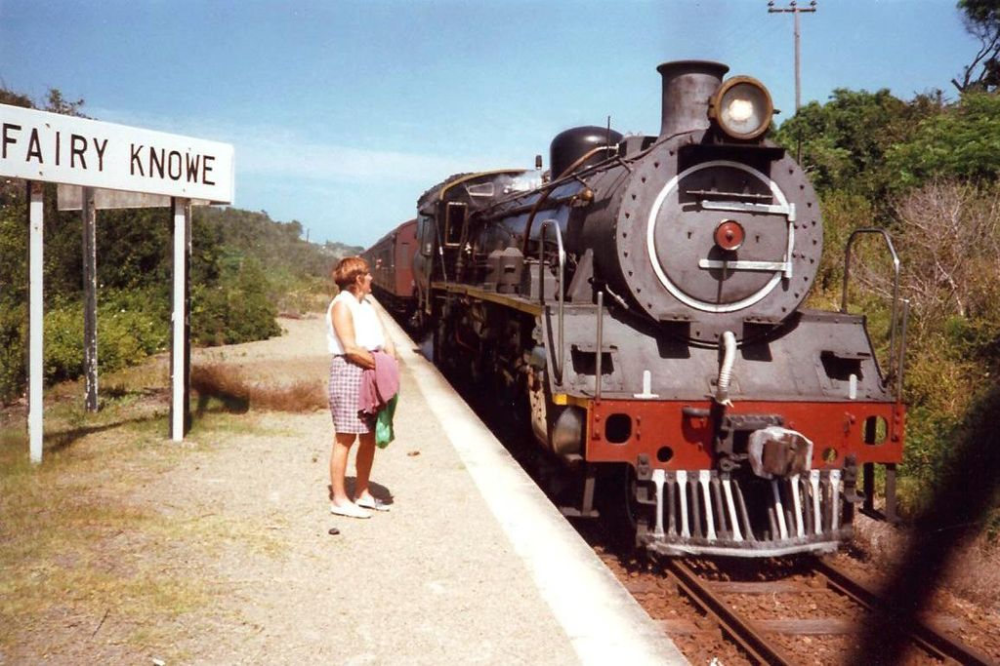 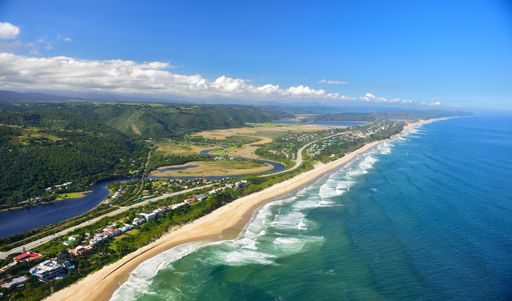 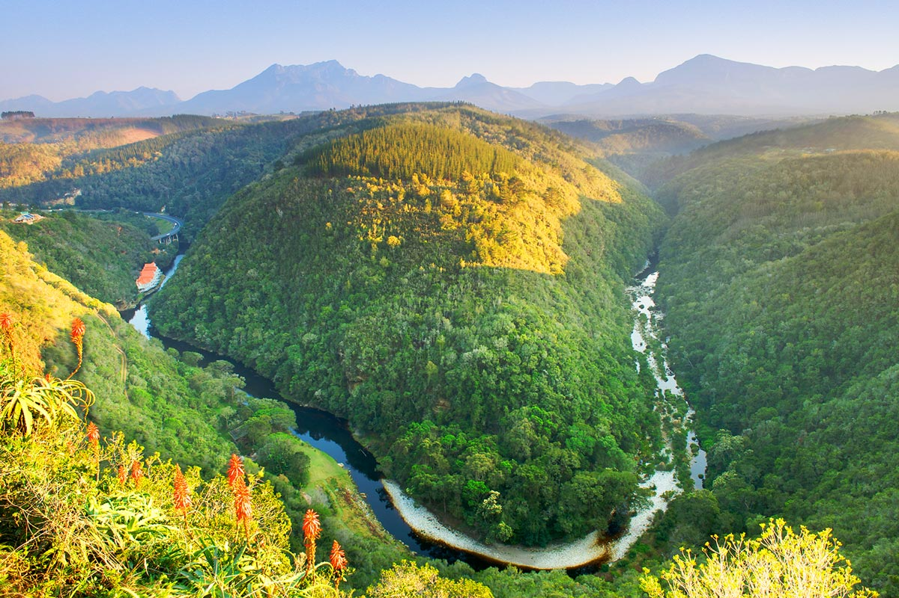The Drakensberg (Afrikaans: Drakensberge, Zulu: uKhahlamba, Sotho: Maluti) is the eastern portion of the Great Escarpment, which encloses the central Southern African plateau. The Great Escarpment reaches its greatest elevation – 2,000 to 3,482 metres (6,562 to 11,424 feet) within the border region of South Africa and Lesotho. A map of South Africa shows the central plateau edged by the Great Escarpment and its relationship to the Cape Fold Mountains to the south. The portion of the Great Escarpment shown in red is known as the Drakensberg. The Drakensberg escarpment stretches for more than 1,000 kilometres (600 miles) from the Eastern Cape Province in the South, then successively forms, in order from south to north, the border between Lesotho and the Eastern Cape and the border between Lesotho and KwaZulu-Natal Province. Thereafter it forms the border between KwaZulu-Natal and the Free State, and next as the border between KwaZulu-Natal and Mpumalanga Province. The escarpment winds north from there, through Mpumalanga, where it includes features such as the Blyde River Canyon, Three Rondavels, and God's Window. It then extends farther north to Hoedspruit in southeastern Limpopo where it is known as 'Klein Drankensberg' by the Afrikaner. From Hoedspruit it extends west to Tzaneen, also in Limpopo Province, where it is known as the Wolkberg Mountains and Iron Crown Mountain. At 2,200 m (7,200 ft) above sea level, the Wolkberg is the highest elevation in Limpopo. The escarpment extends west again and at Mokopane it is known as the Strydpoort Mountains.
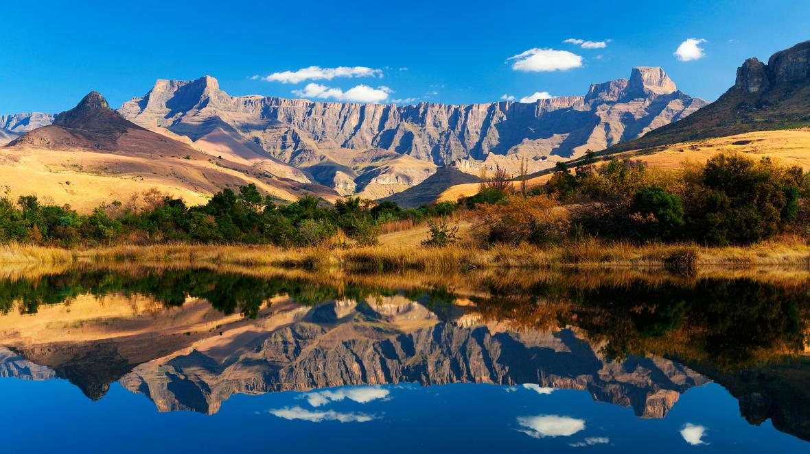The highest peak is Thabana Ntlenyana, at 3,482 m (11,424 ft). Other notable peaks include Mafadi (3,450 m (11,319 ft)), Makoaneng at 3,416 metres (11,207 ft), Njesuthi at 3,408 metres (11,181 ft), Champagne Castle at 3,377 metres (11,079 ft), Giant's Castle at 3,315 metres (10,876 ft), Ben Macdhui at 3,001 metres (9,846 ft), and Popple Peak at 3,331 metres (10,928 ft), all of these are in the area bordering on Lesotho, which contains an area popular for hikers, Cathedral Peak. North of Lesotho the range becomes lower and less rugged until entering Mpumalanga where the quartzite mountains of the Transvaal Drakensberg are loftier and more broken and they form the eastern rim of the Transvaal Basin, the Blyde River Canyon lying within this stretch. The geology of this section is the same as, and continuous with, that of the Magaliesberg.
The mountains are rich in plant life, including a large number of species listed in the Red Data Book of threatened plants, with 119 species listed as globally endangered and "of the 2 153 plant species in the park, a remarkable 98 are endemic or near-endemic". The flora of the high alti-montane grasslands is mainly tussock grass, creeping plants, and small shrubs such as ericas. These include the rare Spiral Aloe (Aloe polyphylla), which as its name suggests, has leaves with a spiral shape. Meanwhile, the lower slopes are mainly grassland, but are also home to conifers, which are rare in Africa, the species of conifer found in the Drakensberg is Podocarpus. The grassland is of interest as it contains a great number of endemic plants. Grasses found here include oat grass Monocymbium ceresiiforme, Diheteropogon filifolius, Sporobolus centrifugus, caterpillar grass (Harpochloa falx), Cymbopogon dieterlenii, and Eulalia villosa. In the highest part of Drakensberg the composition of the flora is independent on slope aspect (direction) and varies, depending on the hardness of the rock clasts. This hardness is related to weathering and is variable even within a single landform.
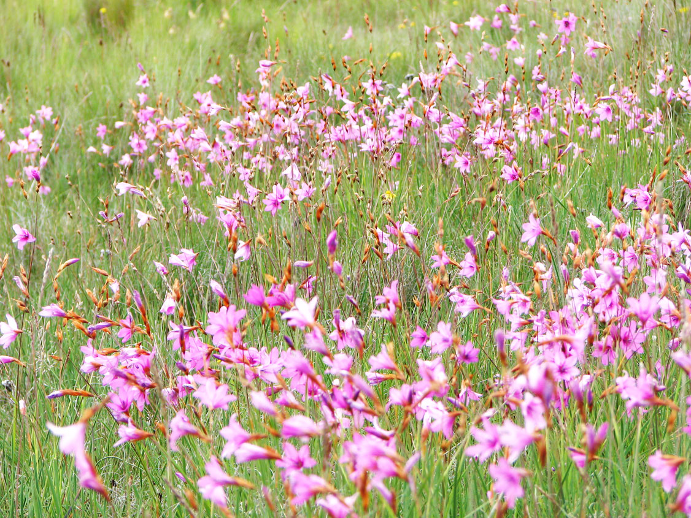The Drakensberg area is "home to 299 recorded bird species"' making up "37% of all non-marine avian species in southern Africa". There are 24 species of snakes in the Drakensberg, two of which are highly venomous.
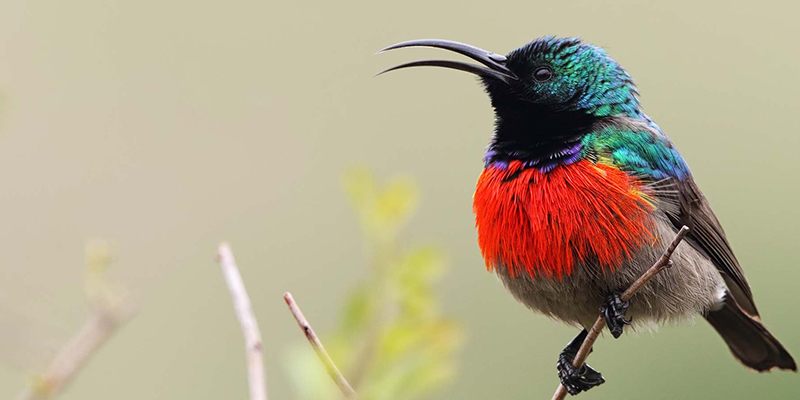Kruger National Park is a South African National Park and one of the largest game reserves in Africa. It covers an area of 19,485 km2 (7,523 sq mi) in the provinces of Limpopo and Mpumalanga in northeastern South Africa, and extends 360 km (220 mi) from north to south and 65 km (40 mi) from east to west. The administrative headquarters are in Skukuza. Areas of the park were first protected by the government of the South African Republic in 1898, and it became South Africa's first national park in 1926. To the west and south of the Kruger National Park are the two South African provinces of Limpopo and Mpumalanga, respectively. To the north is Zimbabwe, and to the east is Mozambique. It is now part of the Great Limpopo Transfrontier Park, a peace park that links Kruger National Park with the Gonarezhou National Park in Zimbabwe, and with the Limpopo National Park in Mozambique. The park is part of the Kruger to Canyons Biosphere, an area designated by the United Nations Educational, Scientific and Cultural Organization (UNESCO) as an International Man and Biosphere Reserve. The park has nine main gates allowing entrance to the different camps.
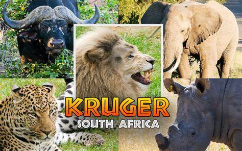The climate of the Kruger National Park and lowveld is subtropical/tropical, specifically a hot semi-arid climate. Summer days are humid and hot. The rainy season is from September until May. The Kruger National Park website lists September and October as the driest periods, culminating in the beginning of the rainy season late in October. Because the park spans 360 kilometres or 220 miles from north to south, climate can vary throughout the park. Skukuza in the southern part of the park is about 2 to 3 °C (3.6 to 5.4 °F) cooler throughout the year than Pafuri in the north, with significantly more rainfall.
Vegetation: Plant life consists of four main areas, which correspond roughly to the four quadrants of the park. The main veld types are determined by the rainfall gradient and geological substrates.
Mammals: All the big five game animals are found at Kruger National Park, which has more species of large mammals than any other African game reserve (at 147 species). There are webcams set up to observe the wildlife.[29] The park stopped culling elephants in 1994 and tried translocating them, but by 2004 the population had increased to 11,670 elephants, by 2006 to approximately 13,500, by 2009 to 11,672, and by 2012 to 16,900. The park's habitats may only be able to sustain about 8,000 elephants, though this is not entirely clear. Elephants do change plant growth and density in the park, and some species, such as wildebeests, clearly benefit from an increase in grasslands. The park started an attempt at using contraception in 1995, but has stopped that due to problems with delivering the contraceptives and upsetting the herds. Kruger supports packs of the endangered African wild dog, of which there are thought to be only about 400 in the whole of South Africa.
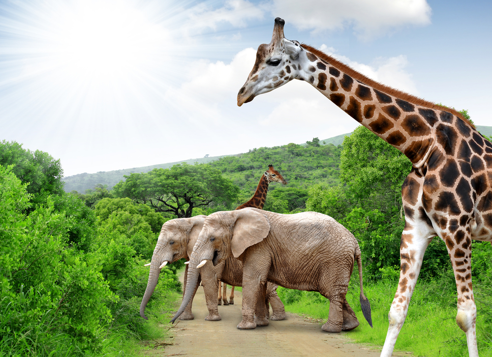 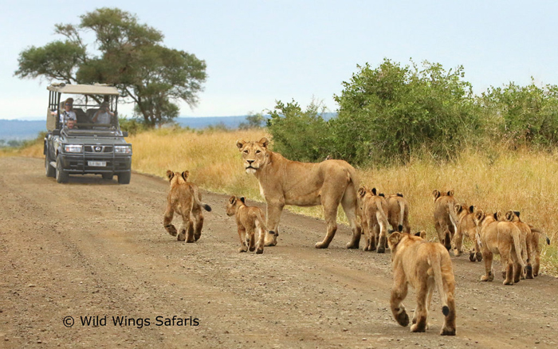 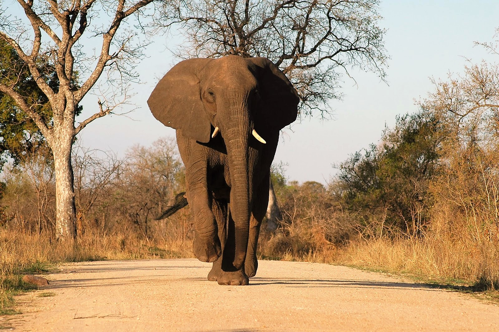